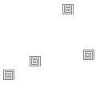
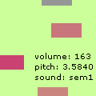

During the development of the ixi project we had different ideas we could have explored but we did not have time for it. In this section you will find a series of sketches that explain different directions and areas to explore.
The
Worm:
>> Launch (16k) shockwave
8.5 required
The Worm came into being when developing the sound pitch and panning for
the Teaser. It calculates the pitch and the pan relating to the location
of the mouse.
The
Tree:
The Tree is a system where sounds can be placed on different nodes in
a 1 to 16 branching tree structure. Thus, there are 31 sounds that can
play subjected to varying degree of control and randomness. The system
is built up such that it can easily be modified for different uses.
 Pixilamp:
>> Launch (62k) shockwave
8.5 required
Pixilamp:
>> Launch (62k) shockwave
8.5 required
In Pixilamp squares with random colour appear on the screen. The scale
of the randomness can be controlled by the user, using sliders for the
red, green and blue colour values. The speed of the changes can be controlled
and the size of the squares. The sound is triggered by a sound engine
that is connected to the square size and the speed of the squares. Three
different soundtracks can be chosen: plain synth, varied synth and tabla
drums.
Ducky:
Ducky is formed by 4 objects playing the same sound with a different pitch.
The pitch depends on the position on the screen. The whole structure can
be dragged across the screen allowing different sets of pitches. Two sliders
allow the user to set different parameters that affect the relation between
the object (stickiness and elasticity). Custom sounds can be imported.
The
Grid:
The Grid is made up of several sub-objects that can be dragged, affecting
the whole structure and therefore the sound related to each object. Two
sliders allow the user to set different parameters that change the relation
between the objects (stickiness and elasticity). Custom sounds can be
imported.
Layers:
>> Launch (98k) shockwave
8.5 required
In this instrument you can layer up to 8 sounds. You can change the pitch,
volume and sound applied to each one. You can also import your own sounds
into it.
 MicSpace:
>> Launch (158k)
shockwave 8.5 required
MicSpace:
>> Launch (158k)
shockwave 8.5 required
Micspace is an experiment with sounds in space and how to record a track
through arranging the sounds location and the spatial relation between
them. It is 2D at the moment, but should be seen as a possible extention
to the project micWorld, where 3D space is used to control sounds.